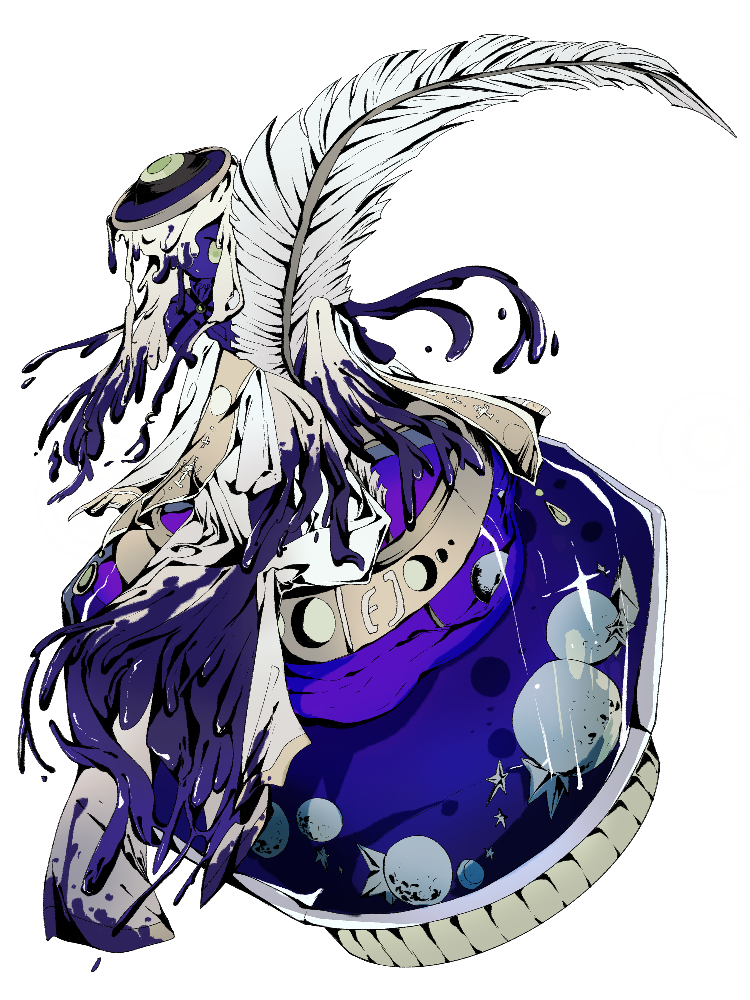
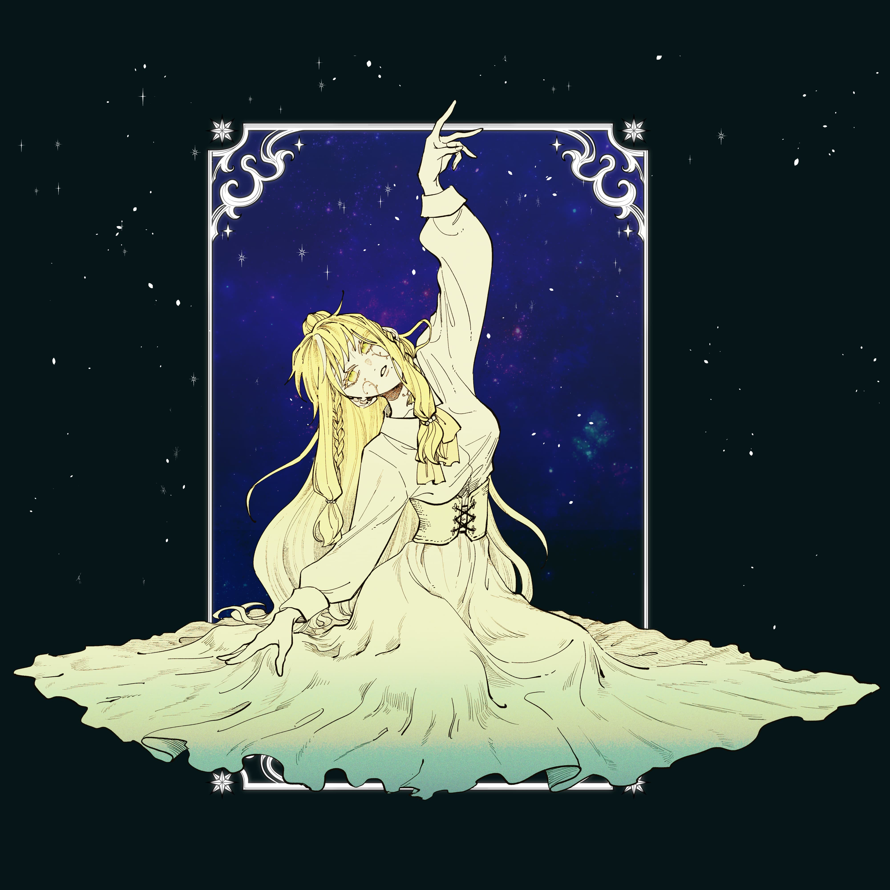

赫伯利亞之上
-記錄於世界樹之下無人知曉的記憶-
拉達娜娜
拉提蜜
瓦涅茲
蘇嵐榭
穆奧
庫纏
魯奧莫卡
伊拉達
利托歐
世界樹圖書館
龍與砂的國度-拉達娜娜
- 行砂

行砂
夜晚，新月掛在天上，滿天星河。隨著少女踏出的步伐金飾發出聲響，繡著金線的黑色頭巾隨風飄揚。
少女停下了腳步，呼出一口白煙：「拉達娜娜的夜還是一樣不輸穆奧呢。」
少女放下手中的燈火坐下，拿出了羽毛筆，開始低著頭寫了些甚麼，絲毫不在意如此精美的裙子是否會被黃沙所弄髒。
寫了一陣子後，忽然一陣強勁的風卷起黃沙。一個龐大的身影降落在少女面前。
羽毛筆點在紙上，墨水暈染開來，她抬首看著眼前的巨龍。
「您怎麼在這裏呢，賽琳大人？」
「…我們同是代理人，不用對我如此恭敬。」
「也是。」大地發出轟隆隆的聲響，黑龍很是愉快的樣子。
「不過你也是變了很多啊。」
賽琳有些疑惑的抬起頭。
「突然的感慨而已。不管是你、我、還是這個上界，在這千年，都變了好多。」
「但改變不見得總是壞事。」
賽琳揮著羽毛筆說著。
「原來你樂見於變化嗎？」
「那倒也不是。」
「我討厭乾涸凝滯的溪水，所以我帶來雨水。」
黑龍伸展了一下爪子。
「那賽琳你呢？」
「談不上討厭，但我會紀錄下，等待雨水到的那一天
黑龍愉快的瞇起豎瞳。
「你真的變了呢，變得更有趣了。」
「那是稱讚？」
「這是我最高級的稱讚。」
東方的迷霧之境-拉提蜜
- 踏霧

踏霧
在東方古老的山脈中，總是籠罩著一片揮之不去的迷霧...
還尚未有記錄

神聖帝國-瓦涅茲
- 旅程還尚未紀錄..
豐饒母神祝福之土-蘇嵐榭
- 旅程還尚未紀錄..
風雪與貿易之港-穆奧
- 旅程還尚未紀錄..
幽深險惡之地-庫纏
- 旅程還尚未紀錄..
傳承與修行之境-奧魯莫卡
- 旅程還尚未紀錄..
開拓科技之島-伊拉達
- 旅程還尚未紀錄..
自由與民主之邦-利托歐
- 旅程還尚未紀錄..
世界樹之下的圖書館
- 變化
- 疲勞或感知？

變化
賽琳沒有做過夢，應該說她沒有這個功能。
萬能的造物主給了她跳動的的心臟、流動的血液、漂亮的皮囊，她是最完美的人偶、書靈，但卻不是人類。
她可以擁有痛覺、視覺、聽覺、味覺，但是她沒有情感，這或許就是她不做夢的原因吧。
行走於赫伯利亞幾百年，唯有增長的只有記憶，但這些都構不成回憶。
一天，鮮少開口的造物主難得下達了指令—— 去清除殘留的污穢吧，我的孩子。它正在蔓延，但我們無法干涉它。
*
賽琳站在赫伯利亞的一隅，一個無人知曉的角落低喃著。
「就是這裡嗎。」
黑色黏稠的液體侵蝕著大地。
賽琳舉起魔杖輪流施了幾個魔法，卻毫無作用。
「看來有些麻煩。」
正當她要使出更高階的權能時，底下的東西像是突然察覺到危機似的，湧上了賽琳。
*
漆黑。
她墮入了無邊無際的黑暗，最終連自身的存在也融入其中。
*
圖書館中—
賽琳的羽毛筆頓了頓，翠綠無機質的眼眸一瞬間產生了許些情緒。
一旁的芙朵歪了歪頭，似是有些疑惑。
「看來遇到麻煩了。」
賽琳嘆了口氣，她的手煩躁的點了點眉心。
—煩躁？
這不太對勁，賽琳心想。
*
另一個賽琳確認後，回報著「看來『我』被侵蝕了。」
「萬幸的是它們似乎滿足於那個軀殼，沒有要繼續生長的意思。」
順便帶回來的，是染黑了的賽琳。
她那美麗的皮膚已不復存在，身體變成了黑色的液體。
即使即時切斷了和本體的聯繫，但依然還是有了甚麼東西逆流回來。
*
她把它裝進了墨水瓶裡——它似乎也很喜歡羽毛筆。
經過觀察，它似乎如幼童般懵懂無知，只是本能的生長。
賽琳將它安置在圖書館，放任它待著。
對於自己的魔法對它毫無效果這件事另賽琳有些氣餒，於是在空閒之餘她開始研究起更多的魔法。
*
自此，有甚麼開始改變了。
她有了喜好，例如研究一個新的魔法，或是混合冒著泡泡的藥水；她也有了嫌惡，例如聒噪的嘴巴。
圖：麦芋

疲勞或感知？
文字從來未從她的感官中逃出。
賽琳娜•芙朵總是覺得最近的羽毛筆有些怪異，彷彿和人類口中總是叨念的「疲勞」出現了一樣的狀況。在她的記錄中，總是有許多張嘴巴用相仿的話語為行為解釋。黑色液體會隨著她的指尖顫動與停頓留下些微崎嶇而不方正的字跡，又或者在特定的詞彙當中留下突出的圓角或蜿蜒的液體。害得如今的每一分被寫下的歷史都不似往常整齊，多了太多——她少見地不知該以何種名義敘述此種情況。
說來，液體進入她的身體的感受，似乎和如今察覺到的怪異有些許相近之處。液體彷彿是在心尖種下一株黑黝黝的小芽，枝芽與根莖便滲入了她的四肢百骸而成為被心所操控的玩偶。心似乎有了帶動身軀的能力。沒有創造之神為世界所留下彰顯新生的嫩綠生長，又或者是豐饒之神鍾愛的燦爛金黃浮現，只有無數黏稠而纏人的黑暗令她本無暇的潔白肌膚不復。
她應當不需要將自己如今的狀況上書報告，畢竟這並不屬於創世之神向她提及需要紀錄的事項，賽琳想。
短暫而幾乎不存在的思考完畢後，她便又繼續書寫今日的歷史。可在墨水將芙朵所回傳出的影像錄入紙張——那不過是某一個王國的孩童在神的指令中所誕生的過程。
她早已看過太多生命的誕生，無論種族。
影像中國王緊蹙的眉頭、汗涔涔皇后的嘶吼與旁人急促的叫喊，害得她的心臟與呼吸似乎也隨之躍動，手中的墨水又出現了一樣的狀況，卻要比前幾日顫動的更加過分，幾乎要糊成無法被閱讀的模樣。賽琳胡亂的將用於書寫的筆與墨水推開，卻突然找不到停下芙朵播放的方式——她從來不需要將停下仔細咀嚼影像才能紀錄，墨水與文字會自然地自筆尖傾瀉——只能夠伸出手來壓上自己鼓噪的胸口，睜大雙眸且抿起嘴唇地看著嬰孩從皇后的體內誕生。
一陣響亮的哭啼聲從影片噴發而出，賽琳為此皺起了眉頭，安靜的樹內被這陣聲音填滿而讓她的腦內混亂，卻看見除了嬰孩以外的所有人全都揚起了笑容。她的眉頭皺起得更深，凹窩似乎可以讓一隻芙朵站立——哭泣可以換來微笑？她只記得看見人類總是為突然哭泣的嬰孩而揚起巴掌，啪的一聲便換走了人類臉上扭曲的表情，與使得嬰孩的面容得到鮮紅色的印子，與下一陣更為誇張而吸引了周遭所有人的哭聲。
來不及讓問題從洪荒的歷史中翻找而得出答案，賽琳便看見了嬰孩被水沖過而後被皇后擁於胸口，而國王卻將兩者一同攬入懷中的畫面。此起彼落的歡呼聲逐漸淹沒嬰孩的哭泣，或者是早已在溫暖中停歇，賽琳不明白。她只感受到這一切似乎悄然地將她的感官淹沒：心上開出的芽湧出無以名狀的感覺，來到大腦中便使得她嫣紅的嘴角僵硬地勾起，綠色眼眸被人類笑容所填滿成淚水，而驅使雙手順著心的指引闔上，差點便要張開又閉合——
這是什麼？
她驚詫地站起身，墨水隨著她的舉動濺灑落地，滴滴答答成了她未遭玷污前裙擺曳地的模樣。
賽琳從未做出這樣的舉動，亦從未有過這——感受？她駐足原地思考良久，才勉強從人類向魔法師的敘述中找到這個堪堪符合的字眼。人類為了向魔法師討要關於病情的解方與藥劑，便如此敘述——難不成她也生病了？
不可能。
左右晃了晃腦袋，她將凌亂的思緒晃出了頭腦，拿起一旁無用的布料將凌亂的現場擦拭乾淨，就坐回了原位。猶豫數秒，便將剛剛才播放完的那個芙朵溝通說明天再回來記錄，再召喚回了另一個芙朵繼續記錄。
墨水仍在紙張上留下不復以往筆直的線條，這次她有些新的發現：這些墨水似乎亦由心所牽引，笑聲傳進墨水內便將文字刻畫的飽滿圓潤；淚水微不可見稀釋了黑色，便害得文字的尾巴暈開漣漪；責罵與恐慌讓黑色變得分外濃稠與厚重，害得賽琳必須要晾上好一陣子才能收回櫃子。
她抬起筆在墨水的瓶口抹去多餘的墨水，嘆了口氣仍迅速動起筆來，無論墨水將令故事扭曲成什麼模樣：
「此紀錄來自一位自稱為某個國家先向其王子的敘述。
某一天早晨，先知來到王子的寢室前。
他說：以創造之神的名義起誓，我夢見蒼茫大地毫無保留地張開雙手迎接，毀滅帶著無數驚聲尖叫與沾哀慟淚水的星光而落下；被盛滿希望的眼眸所注視的王國，會在大地猛烈的晃動之中碎裂；火光與鐵鏽味會在仰息之間佔據子民的軀體，下一秒便淪為死亡的奴役。
先知越說越大聲，王子的臉色在話語之中愈發深沉，而後他們沉默不語，只餘眼眸仍然睜大與眉頭緊皺。
天空的裂縫會為其倒下些許光線當作哀悼，而生命將被明日賦予醜陋的笑容，王國的殘桓也將成為未來的骸骨。
......
最後，天空從陰鬱的雲層間丟下了幾個帶著岩漿的隕石。」
這似乎亦像是一場夢，賽琳放下筆時如此思考，從紫黑的濃稠液體誕生，而如今她的所有舉動與感官皆被籠罩此中。
她舉起未乾的紙張，想著：和這位王子訝異睜大的雙眸一樣，不敢相信。
圖：雪景球 文: Jing Chen